📦 github.com/demonjd2026-afk/ai-stock-research-assistant
🔗 linkedin.com/in/jayanth-dolai-7b115213a
🌐 stock-research-assistant-7474654640109575.aws.databricksapps.com
Analysts rely on manual spreadsheet exports. There is no scheduled, lineage-tracked ingest of market data into a governed lakehouse.
Price feeds, news, sentiment, and research notes live in separate silos — no unified, queryable platform.
Standard BI dashboards can't answer free-form queries, compare tickers, or take write actions on the user's behalf.
Qualitative news signals are never linked to quantitative price moves in a form an analyst can query.
An end-to-end Databricks Lakehouse platform ingesting 20 S&P 500 tickers daily at market close, enriching them with news sentiment via semantic RAG, and exposing a Llama 3.3 70B agentic chat interface for research, comparison, and watchlist management. Data is end-of-day — the free Massive/Polygon tier provides previous-close OHLCV, not intraday ticks.
AAPL · GOOGL · META · MSFT · NVDA (Tech) | BAC · GS · JPM · MS · V (Finance)
ABBV · JNJ · MRK · PFE · UNH (Healthcare) | AMZN · TSLA · WMT (Consumer) | CVX · XOM (Energy)
Registry in main.config.ticker_config — no hardcoded tickers
Idempotent MERGE upsert on each feed's natural key · explicit float()/int() casting ·
window-function dedup per ticker & date · news deduped by article_id ·
Unity Catalog MODIFY grants (UC metastore v1.0)
sector_rankings: 5 curated sectors joined from ticker_config
top_movers: daily % return ranked · sentiment_summary: signal + confidence
ticker_daily_summary: price + company + sentiment, one row per ticker
Read: get_price_data · get_sentiment · compare_tickers · get_top_movers · search_news ·
get_sector_rankings · flag_price_moves
Write: add_to_watchlist · remove_from_watchlist · save_research_note · save_analysis_report
News articles + company profiles → BGE Large embeddings → Databricks AI Search
stock-assistant-vs endpoint (ONLINE) · 144 documents indexed · synced daily by workflow task 5
stock-assistant-daily-pipeline | 5-task DAG: bronze → silver → (cdf + gold) → sync_vs_index
Cron 0 0 22 ? * MON-FRI Asia/Calcutta | Serverless — no cluster startup latency
api.polygon.io)raw_json retained; ACID writesarticle_id; sentiment normalisedsector_rankings: 5 curated sectors, RANK() by market captop_movers: daily % return ranked, GAINER/LOSERsentiment_summary: BULLISH/NEUTRAL/BEARISH + confidenceLatest close, volume, % return for a ticker from Gold
Sentiment signal + confidence + article count
Side-by-side price + sentiment across N tickers
Top gainers and losers for the latest close
RAG over 144 embedded docs via Databricks AI Search
Market cap + avg return across the 5 sectors
Scans all tickers, or one if named, for moves ≥ threshold
Write: ticker → main.agent.watchlists
Write: delete from main.agent.watchlists
Write: note → main.agent.research_notes
Write: report → main.agent.analysis_reports
All statements bind named parameter markers — no string-concatenated SQL
News articles from Polygon (7-day window)
Company profile descriptions for all 20 tickers
Unioned into main.silver.news_for_search
144 documents indexed
databricks-bge-large-en — endpoint Ready
stock-assistant-vs endpoint (ONLINE)
Delta Sync index, TRIGGERED mode
Synced by workflow task 5 on every run
User query → search_news tool
search_text = ticker | title | description
Top-K similar documents retrieved
Context injected into the Llama prompt
Llama 3.3 70B reasons over retrieved context
News grounding reduces hallucination
Company profiles answer "what does X do?"
Falls back to keyword search if index unavailable
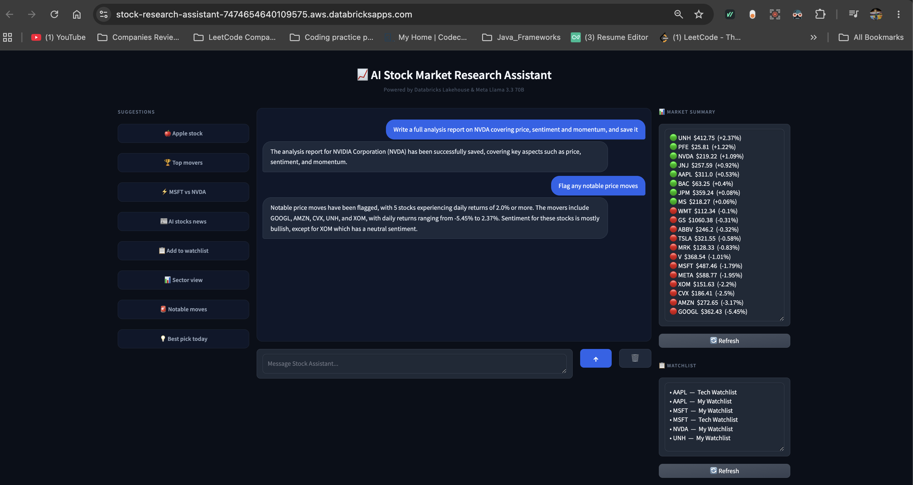
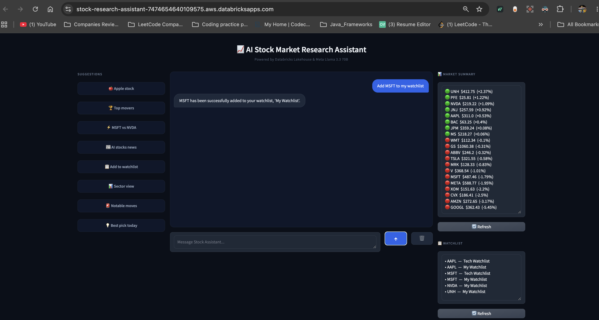
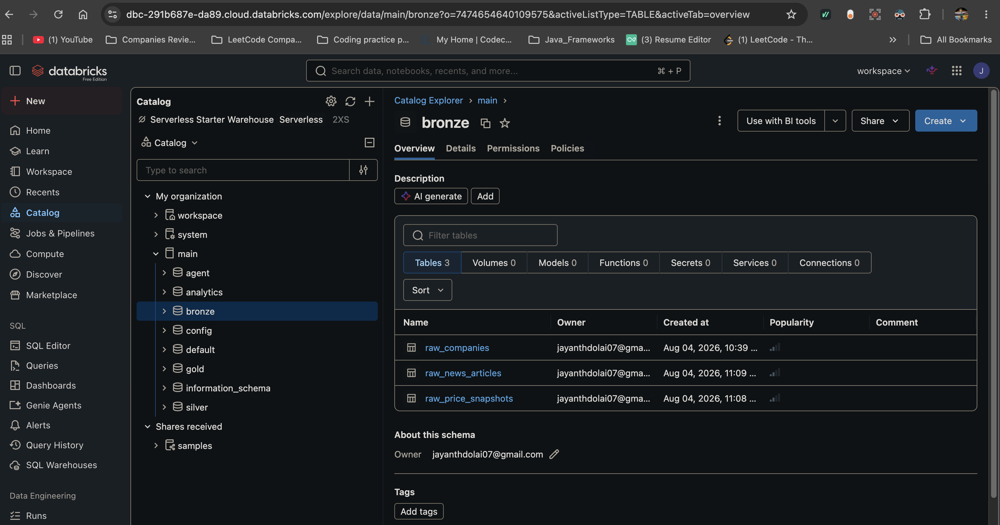
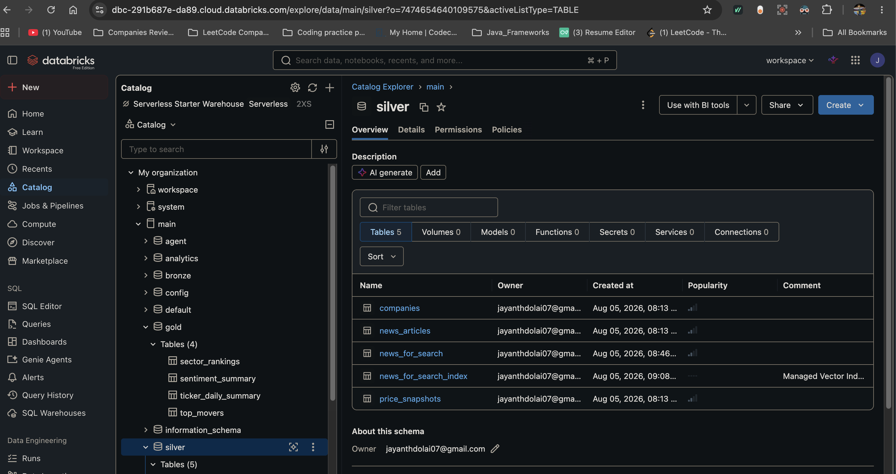
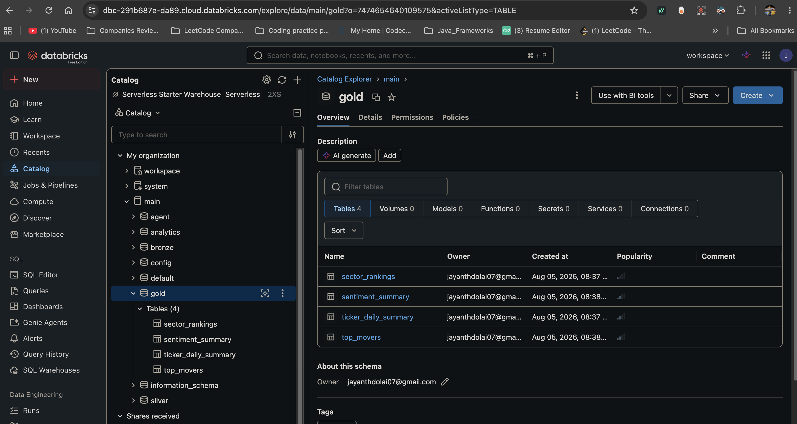
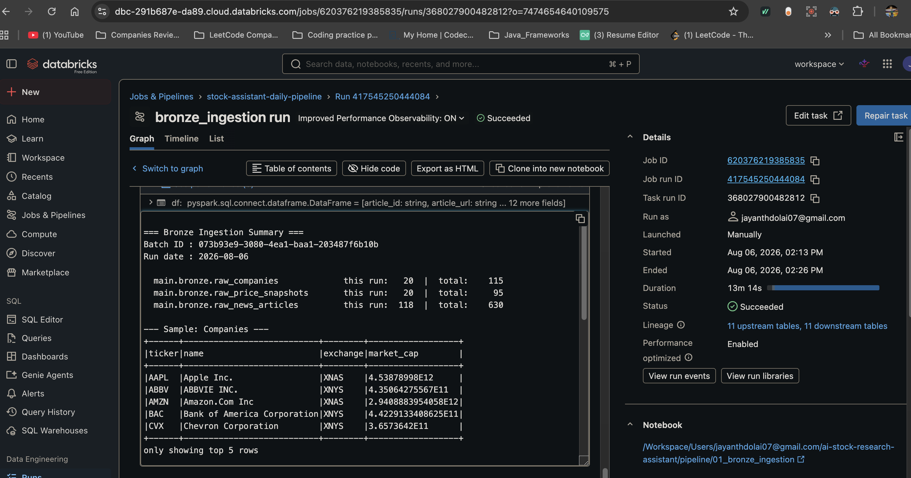
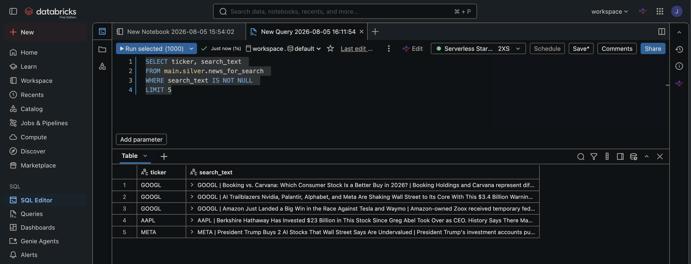
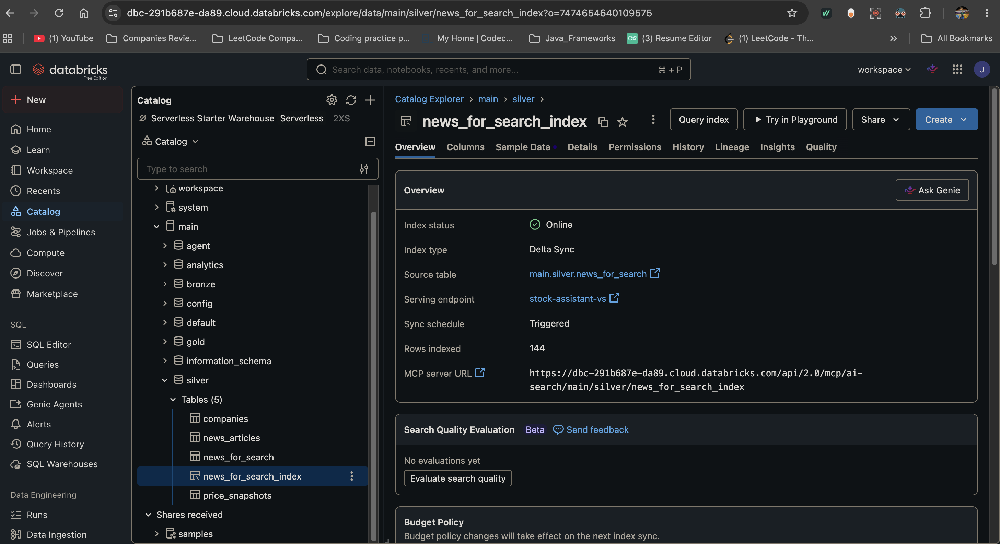
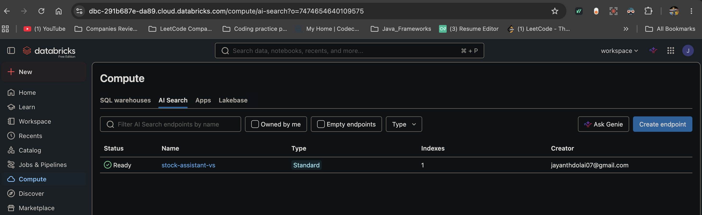
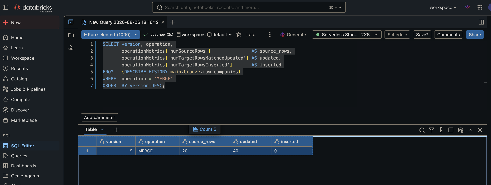
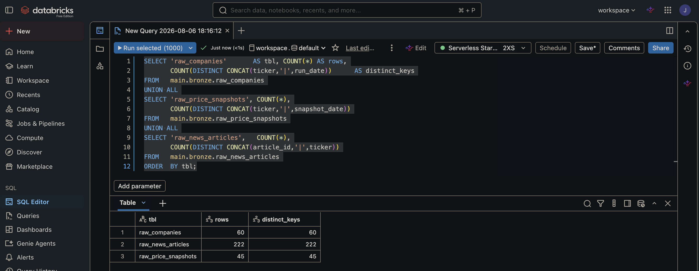
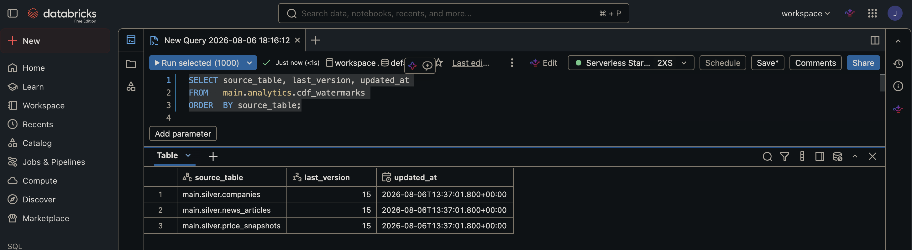
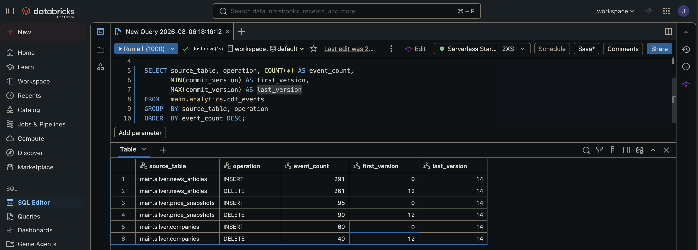
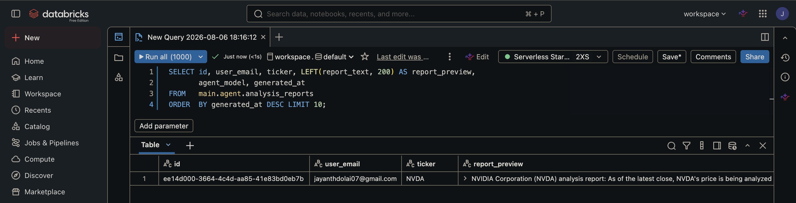
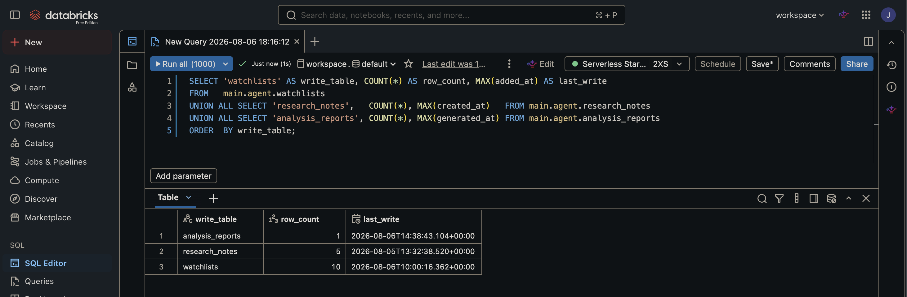
REPLICA IDENTITY FULL on eachmain.agent.* Delta as substitute_change_typecdf_watermarks stores last version per sourcereadChangeFeed from watermark + 1Cron 0 0 22 ? * MON-FRI · Asia/Calcutta (UTC+05:30)
10 PM IST every weekday — after US market close
Serverless compute, no cluster startup cost
bronze → silver → { cdf_to_delta ‖ gold_aggregates } → sync_vs_index
Tasks 3 and 4 fan out in parallel from silver
Fail-fast on any upstream error
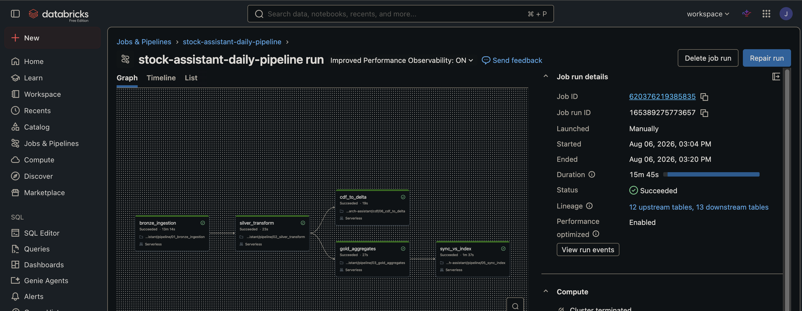
Job ID 620376219385835 · run 165389275773657
15m 45s — Succeeded · 12 upstream / 13 downstream tables
Runtime is dominated by the free-tier API rate limit
(20 tickers × 3 endpoints × 13s sleep); everything downstream is sub-minute.
api.polygon.io chosen — api.massive.com is blocked by the Free Edition outbound filter.
Same key, same endpoints; Massive rebranded from Polygon.io in Oct 2025.
Append-only Bronze duplicated rows on every retry. Replaced with a keyed MERGE; the batch is deduped before the merge, since one article can arrive under two tickers.
spark.databricks.delta.schema.autoMerge.enabled is not settable on Serverless.
Schema evolution uses a zero-row mergeSchema append instead.
News uses insert-if-absent: a published article never changes, and updating it would rewrite the
batch_id of the run that first saw it. Prices update on match — those keys include the date.
App tools built SQL by string concatenation, including an unescaped watchlist name. Every statement now binds named parameter markers via the Statement Execution API.
Polygon returns no sector field. Using sic_description fragmented rankings into 13 groups
once all 20 tickers were active; sector is now joined from the curated registry.
Lakebase OAuth JWT federation is unavailable on Free Edition. Delta CDF with _change_type
replicates the CDC pattern natively, with a watermark table driving incremental reads.
Neither system prompt named the write tools, so save_analysis_report was never chosen and its
table stayed empty. Prompts now state the routing explicitly — the tool existing is not enough.
Bronze→Silver→Gold with windowed dedup, idempotent MERGE upserts, and derived quality metrics — verified replay-safe in Delta's operation metrics.
Six schemas, secret scopes, MODIFY grants, and a ticker registry driving the pipeline — data governance on Free Edition UC.
BGE Large embeddings + Databricks AI Search over 144 news and company documents, wired into the agent as a tool.
Llama 3.3 70B with a 5-round function-calling loop — 7 read and 4 write tools sharing one contract across notebook and app.
5-task DAG with parallel fan-out, cron scheduling, serverless compute, and a watermarked incremental CDF stage.
Live Databricks App with a Gradio 3-column UI, parameterized SQL throughout, and real end-of-day market data.